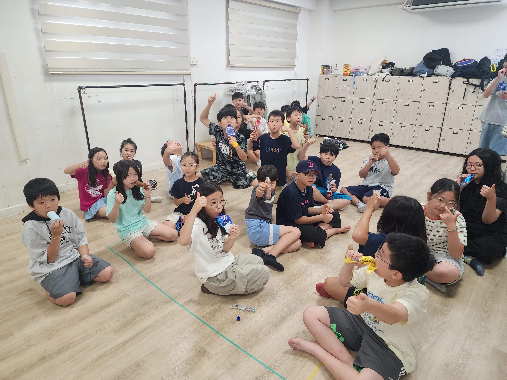
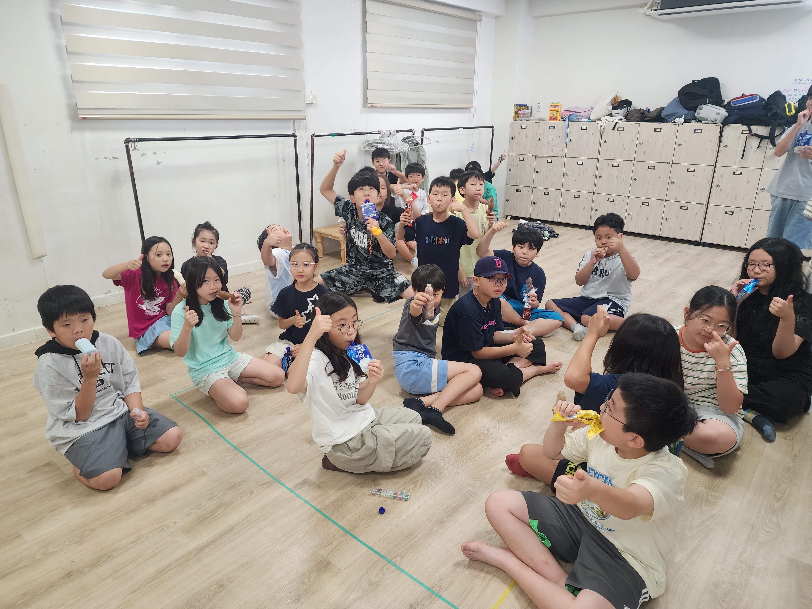
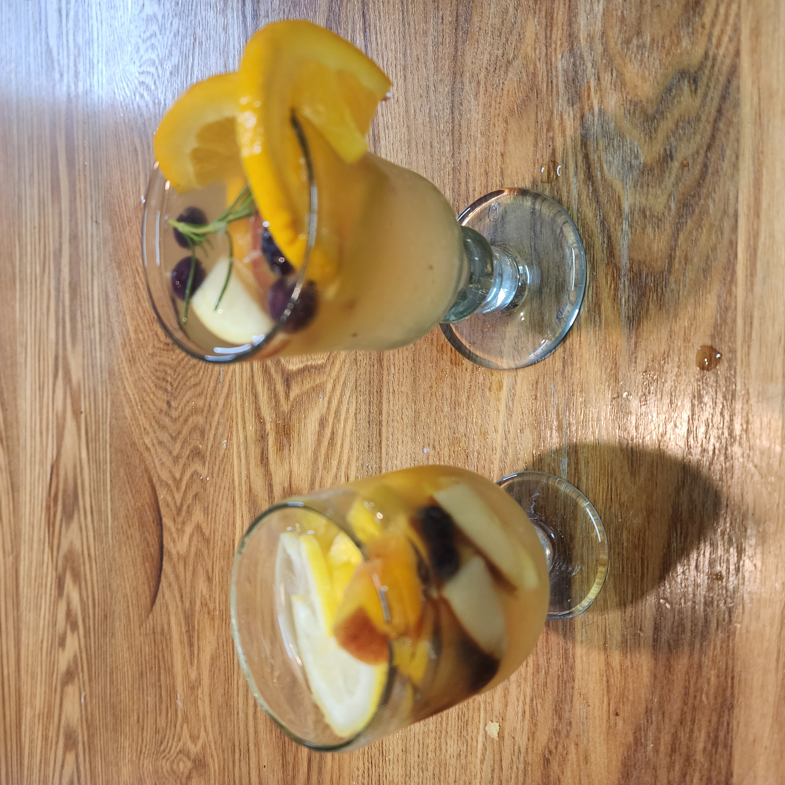
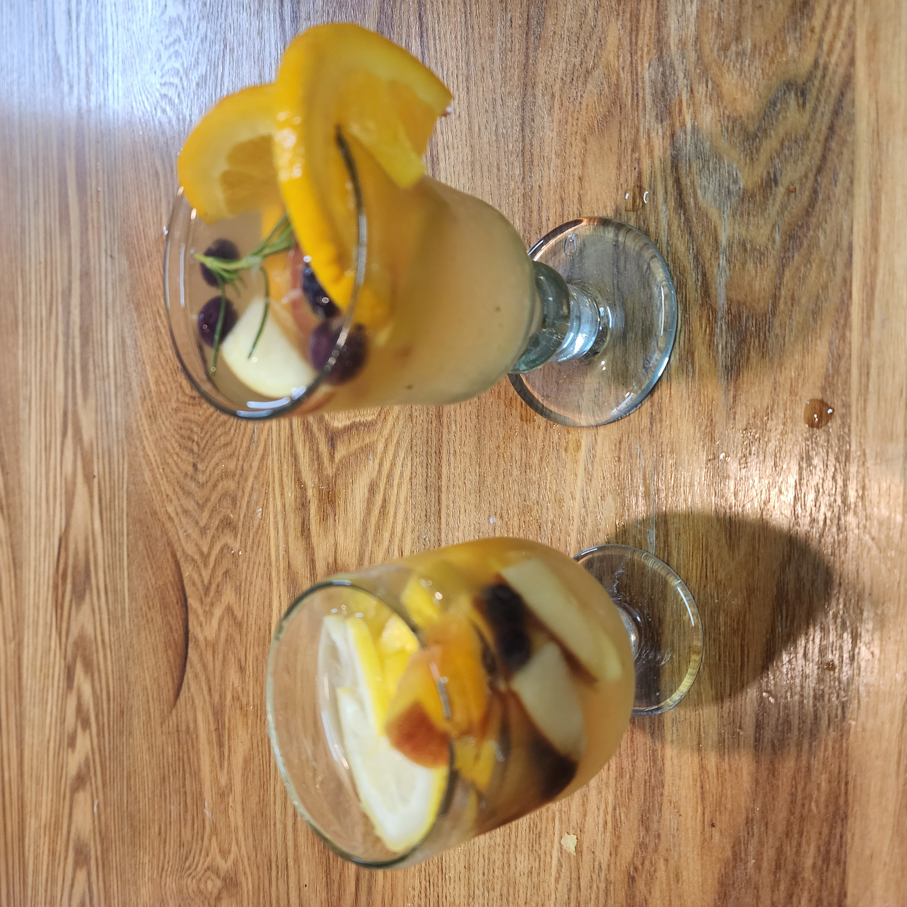

.png)
두근두근 방과후 소식지
2025년 8월호 | 우리 아이들의 특별한 이야기
💌 이사장 인사말
지난 주말 두근 아마들과 함께 첫 책모임을 하였습니다. 같이 읽은 책은 『불안세대』입니다. 흔히 Z세대라 일컫는 96년생 이후 세대가 청소년기에 스마트폰을 통해 24시간 접속 가능한 디지털 세계(여아는 주로 소셜네트워크, 남아는 게임)에 머무르며, 불안과 우울증이 얼마나 증가했는지를 실증적으로 보여주는 책입니다.
저자는 머리말에서, 스마트폰과 함께 하는 아이들의 삶은 지구가 아닌 화성에서 자라는 것과 같다고 말합니다. 화성(=디지털 세계)은 지구의 대기와 같은 보호막도 없고, 중력은 지구의 절반도 안 되어 아이들의 몸이 견디기 어렵다고 합니다. 개발 회사들이 해결책을 내놓는 척하지만, 실상은 아이들을 꾀어 더 많이 화성에 보내는 법만 연구 중이라는 지적도 인상 깊었습니다.
저자는 아이들이 자라야 할 현실 세계를 다음과 같이 정의합니다. 첫째, 체화된 방식의 상호작용. 둘째, 타이밍과 차례가 중요한 동기화된 상호작용. 셋째, 일대일 또는 일대다 방식의 단일한 의사소통. 넷째, 진입과 퇴출 장벽이 높은 공동체 속에서의 관계입니다.
이 설명을 읽으며 떠오르지 않으셨나요? ㅋㅋㅋ, ㅎㅎㅎ로 맥락 없이 흘러가는 채팅 속 아이들이 아니라, 두근 터전 안에서 시끄럽고 정신없지만 땀내나는, 웃고 고자질하고 부대끼며 관계를 맺는 아이들의 모습이요. 아이들이 두근이라는 세계 안에서 현실의 공동체를 배우며 자랄 수 있음에 감사함을 느낍니다.
이러한 두근이라는 세계는 곳곳에서 애써주시는 아마분들의 힘으로 유지되고 있는 것이겠지요. 주말에는 두책모도 있었지만, 동시에 두근 에어컨 대청소도 있었습니다. 외부 전문가의 손길로 기기를 해체해 본체와 부품 하나하나를 꼼꼼히 세척하고 재조립하는 대작업이 진행되었는데요. 아침 9시부터 저녁 6시까지, 시설이사 번개님이 토요일 하루를 통째로 반납하시며 작업을 감독해 주셨습니다. 번개님 덕분에 두근에 들어서면 한결 시원한 공기를 마실 수 있게 되었습니다.
방학이 끝나고 아이들로 다시 북적일 터전이, 이 달라진 공기 속에서 아이들의 진정한 ‘터전’으로 더욱 든든히 자리하길 바랍니다.
이사장 딱지 드림
🎓 7월 주요 활동
- 🎭 가면 만들기
- 🎨 동두이몽(그림책 만들기) by 주주
- ⚾ 야구장 활동 : 티볼게임
- 🧪 프로캠 활동
- 📖 해방시 클럽 : 갈수록 실력 향상
- 📚 책퀴즈(아리) : 2~3주 간격으로 도서관에서 책 가져와서 꾸준히 활동 중
- 🖼️ 앤서니 브라운 전시회(7월 24일, 1~4학년 대상 약 18명)
- 🤝 5,6학년 모임
- 🧵 한달한책(카드지갑)
- 🕺 외부 강사 활동(댄스, 몰입독서)
📸 활동 사진 모음
7월 활동 속 순간들을 사진으로 함께 나눕니다.


 



📰 아나바다 장터 & 보노 사진관
아나바다 장터
터전에서 아나바다 장터가 열렸습니다. 아이들은 각자 물건을 준비하고 직접 가격을 정해 판매해보며 협상과 정산 등 실질적인 경제 경험을 할 수 있었습니다. 더불어 친구들과 함께 준비하고 운영하는 과정에서 소통과 협력의 즐거움도 나누었습니다. 장터가 끝난 후 교육소위에서 마련한 먹거리 부스(수제 베이컨, 화채, 샹그리아, 떡볶이, 달고나 등)는 우리 아이들은 물론 아마들에게도 큰 호응을 얻었습니다. 이번 아나바다 장터에서 얻은 수익금은 터전 도서 구입에 사용될 예정입니다. 이번 행사를 준비해주시고, 참여해주신 모든 분들께 감사인사를 드립니다.
 

보노 사진관 운영
24기 윤하빠 보노의 재능기부로 아나바다 장터 옆에 부스를 연 보노사진관은 가족사진 및 아이들 사진을 찍어주는 방식으로 진행되었습니다. 보노사진관을 통해 아이들의 자연스럽고 행복한 표정이 담긴 사진들이 전해졌습니다. 아마 분들은 "소중한 추억이 되었다", "힐링이 되었다", "사랑이 담긴 사진이다" 등의 따뜻한 감상을 전해주셨습니다. 아이의 순간을 기록해 가족과 나눌 수 있었던 이번 촬영은 큰 감동을 주었습니다. 사진을 통해 아이들의 순수함과 우정, 사랑스러움이 고스란히 전달되었습니다. 보노의 정성과 재능기부가 만든 이 특별한 기록은 두근의 소중한 기억으로 남을 것입니다.

🚄 5,6학년 경주 여행
6월 말, 두근두근 5·6학년 아이들이 스스로 계획하고 떠난 경주 여행이 무사히 마무리되었습니다. 여행 전 회의와 역할 분담, 일정 조율까지 모두 아이들 스스로 준비한 이번 프로젝트는 단순한 체험을 넘어, 진정한 자율과 책임을 배우는 시간이었습니다.
계획서에는 느긋한 기상과 자유시간이 다수 포함되어 있어 걱정 반 기대 반으로 지켜보았지만, 아이들은 더운 날씨 속에서도 서로를 챙기며 각자의 방식으로 여행을 즐기고 돌아왔습니다.
아침 7시부터 일어나 놀이를 시작하고, 더운 날씨에도 그늘을 찾아다니며 놀 만큼 놀이에 진심이었던 아이들. 놀이에는 동물적인 감각으로 움직이는 6학년들과, 그런 6학년들이 시끄럽다며 조용한 곳을 찾아 여유를 즐기는 5학년들. 여행기간동안 설겆이에 흥미를 갖더니만 남다른 재능을 발견한 5학년들. 여행 중 몸이 아파 힘들었던 서윤이와 이현이도 있었지만, 누구 하나 빠지지 않고 끼니를 챙기고 뒷정리까지 도맡았던 모습은 모두에게 인상 깊었습니다.
저의 우려섞인 시선과는 다르게 우라분교 펜션 사장님께서는 “이 아이들은 이곳에 다녀간 아이들 중에서 최고로 잘 논다”고 칭찬을 아끼지 않으셨습니다. 그만큼 아이들의 에너지가 빛났던 시간이었고 저의 그런 마음을 환기시켜주는 이야기였습니다.
돌아와서는 "더웠다", "재밌었다"는 짧고 무심한 말만 남겼지만, 그 속엔 함께 땀 흘리고 힘들었고 웃고 경험한 소중한 기억들이 담겨 있을 것입니다. 무더운 경주보다 뜨거웠던 아이들의 진심이 담긴 이번 빚나는 여행이 아이들의 다음 빚날(?) 여정을 준비하는 마중물이 되었기를 바랍니다.
(글: 희한, 사진: 희한, 아리)


🏊 두근 수영장 개장
무더위를 식혀준 두근 앞마당 수영장이 개장되었습니다! 작은눈이 손님을 맞이하는 펜션 사장님(?)의 마음으로 직접 준비한 물놀이터는 여름철 우리 아이들에게 최고의 선물이 될 것입니다.


📖 두책모 시작
7월 26일, 두근두근 책모임(두책모)이 첫 모임을 열었습니다. 첫 선정도서『불안세대』를 함께 읽고 나누며, 다양한 연령의 아이들과 어울리며 자라는 환경의 중요성에 대해 많은 이야기를 나누었습니다.
후끈 달아오른 토론의 열기로 참여하신 아마분들 얼굴이 모두 붉어지셨다는 후문입니다.^^
다음 달 두책모 안내
8월 독서모임 선정도서는 '다정한 것이 살아남는다.' (부제:친화력으로 세상을 바꾸는 인류의 진화에 관하여, 브라이언 헤어, 버네사 우주 저)입니다.
다음 달 모임에도 많은 관심과 참여로 두책모가 더욱 활성화되길 기대합니다. (자세한 내용은 카페 게시글을 확인하여 주시기 바랍니다.)

📌 기타 운영사항
🧹 주말 청소 및 시설 관리
7월 26일(토), 터전 에어컨 내부 청소가 무사히 마무리되었습니다. 더운 날씨 속에서도 꼼꼼히 청소에 참여해주신 아마 분들께 진심으로 감사드립니다.
에어컨 청소가 진행되는 토요일 하루를 온전히 터전을 지켜주신 시설이사 번개에게도 따뜻한 감사의 마음을 전합니다.
📘몰입독서 및 🕺댄스수업
방학 기간 휴강, 2학기부터 재개키로 하였습니다.
🐾옥상 고양이 '한양이' 돌봄
홍보이사 튤립 가정에서 2~3일 간격으로 터전에 방문하여 사료·물 챙겨주시기로 했습니다. 감사합니다.
다만 휴가 시즌에는 자리를 비울 수도 있어, 모든 아마 가정에서도 함께 🐱한양이를 돌봐주시면 감사하겠습니다.
📚 방학 중 프로그램 안내
🗓️ 8월 교육활동 계획
- 🏯 경복궁 나들이
- 📸 두근 사진관
- 🧵 네트공예(카드지갑)
- 📚 도서관 나들이
- 🎨 팝아트
- 🌞📘 몰입독서 · 📖 그림책 특강 포함 여름캠프 활동
- 💦 수영장/물총데이
- 🌀 팽이 돌리기
- 🪨 몽돌 만들기
- 📿 마끄라메 팔찌 만들기
- 🎲 보드게임
🙏 감사합니다
7월 한 달간 교육과 주방 활동에 함께해주신 아마분들께 감사드립니다. 더운 날씨에도 자리를 지켜주셔서 고맙습니다.
- 7/1 (화) 하교지도아마 - 24기 김서현맘
- 7/2 (수) 교육아마 - 20기 박연재맘
- 7/7 (월) 교육아마 - 21기 김주원맘
- 7/11 (금) 주방아마 - 21기 김주원맘
아마일지 – 시온맘의 하루
아이들과 함께하는 설렘 가득 안고, 오랜만에 찾은 관문초 후문. 도율이와 은서는 그네를 조금 더 타고 가자며, 땡볕 아래에서도 하늘까지 닿을 듯 신나게 그네를 탔습니다. 그 참을성(?)에 감탄하며 후문을 나오는 길, "편의점 가자"는 말에 두 눈이 똥그래지는 귀요미 토끼들, 그 모습이 어찌나 귀여운지 혼자 웃음이 터졌지요.
간식은 도율이는 콘 아이스크림, 은서는 요구르트 맛 젤리, 저는 무가당 바나나맛우유 픽! 편의점 벤치에 앉아 도란도란 이야기꽃을 피우는데, 도율이는 혼자 떨어져 앉아있더니 슬그머니 다가옵니다. 안 오겠다더니, 뭐야~ 왜 이제 와서? ㅋㅋㅋ
조금 늦게 도착한 두근 앞에서 은서가 말합니다. “우리 놀고 온 거야.” “얘기 많이 했잖아~” “그러네~” ㅋㅋㅋㅋ 귀여움 폭발!
터전에 도착하자마자 작은눈 선생님께서 활동 전 유의사항을 알려주시고, 바람 선생님이 준비하신 활동이 이어졌어요. 연아, 은강, 지한이와 함께 머리를 맞대어 암호를 푸는 모습은 참 대견했습니다. 👏
이어서 열린 조촐한 음식점! 서윤, 시온, 은서가 함께 운영했고, 첫 손님은 작은눈 선생님! 무려 8개의 메뉴를 주문하신 큰 손답게 분위기를 살려주셨죠. 호객왕 시온이와 은서, 손맛왕 서윤이의 팀워크로 손님이 북적이기 시작하더니, 작은눈 선생님의 마시멜로우 한 방에 대기 줄까지 생겼습니다. 🍡
윤이는 보호장갑까지 끼고 녹슨 팽이를 열심히 닦고, 언니들은 상점 놀이에 바빠 종이를 자르고 돈을 만들고 있었습니다. 형아팀은 설명하기 어려운, 그들만의 상상놀이에 푹 빠져 있었습니다. 😊
사진은 없지만, 아이들과 공기놀이도 했답니다. 은하수, 피아노 금지, 콩 등 공기놀이의 세계가 이렇게 넓은 줄은 몰랐네요. 🤹
마지막으로, 경주여행을 들 모두 즐거운 경험이 될 수 있었으면 좋겠습니다.